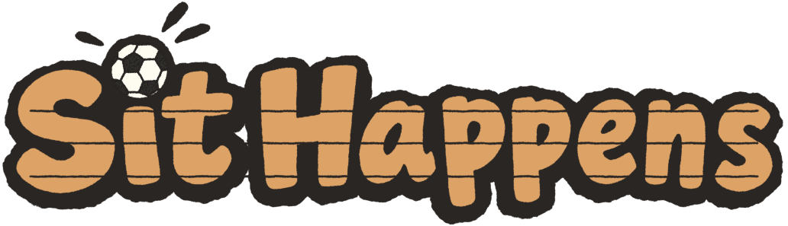

Num parque cheio de gente, há um banco com três lugares e uma regra simples:
ninguém se pode sentar!
Pontos 0
Melhor 0

Acertaste em 0 pessoas!
A tua melhor pontuação foi 0 pontos.


Acertaste em 0 pessoas!
A tua melhor pontuação foi 0 pontos.